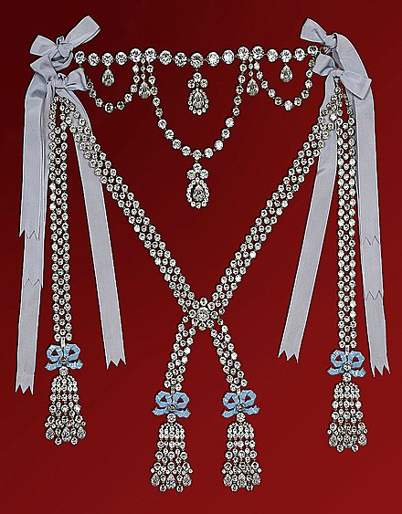
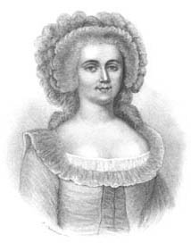
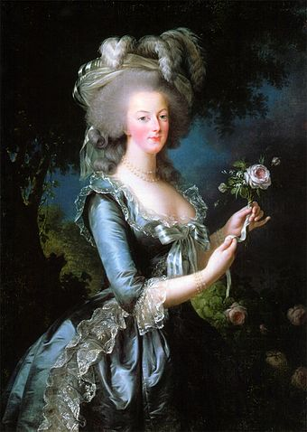

From Wikipedia, the free encyclopedia
The Queen's reputation, already tarnished by gossip, was further sullied by the false accusation that she had participated in a crime to defraud the Crown's jewellers in acquiring a very expensive diamond necklace she then refused to pay for. In reality, she rejected the idea of buying it only to have her signature forged by Jeanne de Valois-Saint-Rémy. Although Jeanne was later convicted, the event remains historically significant as one of many that led to the French disillusionment with the monarchy, in that it was one of the contemporary scandals that gave moral weight and popular support for the French Revolution.
 In 1772, Louis XV of France decided to make Madame du Barry, one of his mistresses, a special gift at the estimated cost of 2,000,000 livres (approximately US$15.1 million in 2021). He requested that Parisian jewelers Charles Auguste Boehmer and Paul Bassange create a diamond necklace that would surpass all others in grandeur.
It would take the jewellers several years and a great deal of money to amass an appropriate set of diamonds. In the meantime, Louis XV died of smallpox and his grandson and successor banished Madame du Barry from the court.
It was described as "a row of seventeen glorious diamonds, as large almost as filberts... a three-wreathed festoon, and pendants enough (simple pear shaped, multiple star-shaped, or clustering amorphous) encircle it... around a very Queen of Diamonds".[1] The jewellers hoped it would be a product that the new Queen of France, Marie Antoinette, would buy and indeed in 1778 the new king, Louis XVI, offered it to his wife as a present, but she refused.[2] The queen initially turned it down stating, "We have more need of Seventy-Fours [ships] than of necklaces."[1] Some said that Marie Antoinette refused the necklace because it was created for du Barry, whom she strongly disliked. According to others, Louis XVI himself changed his mind.[3]
After having vainly tried to place the necklace outside France, the jewellers again attempted to sell it to Marie Antoinette after the birth of Louis Joseph, Dauphin of France, in 1781. The Queen again refused.[3]
 Wikipedia